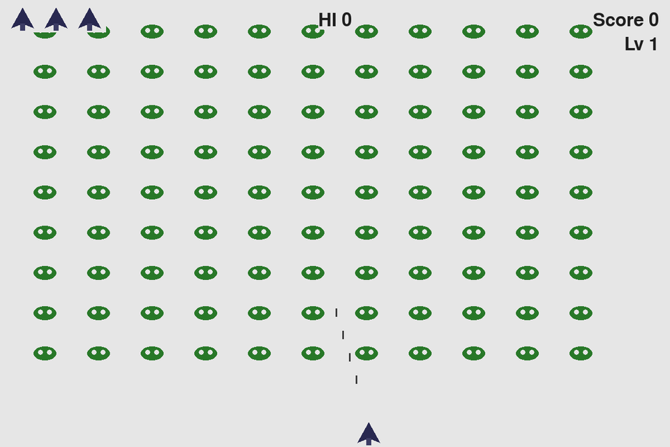

PROJECT / 02
首页 / 作品 / 星球大战 mini
已完成
星球大战 mini
star-wars-mini
用 Pygame 练类、对象和游戏主循环的入门射击小游戏。

游戏运行画面
玩法
- 左右方向键移动飞船，空格射击。
- P 或点击 Play 开始；Q 退出。
- 清完一波外星人会加速，分数与剩余生命显示在上方。
THE IDEA
为什么做
跟着教材做完一遍后，想独立改结构和资源，确认自己理解游戏循环。
WHAT I BUILT
已做成
- 左右移动、射击、分数与 Play 按钮
- 模块划分：settings / ship / bullet / alien / scoreboard 等
- 本地用 python alien_invasion.py 启动
EXPLORE IT
怎么试
- 安装 Python 3 与 pygame
- 在仓库目录运行：python alien_invasion.py
- 方向键移动，空格射击，P 开始，Q 退出
WHAT’S NEXT
下一步
- 如需公开演示，可补充录屏或浏览器版（当前无在线 demo）
THE DETAILS
资料说明
文案依据公开 README；图片素材授权需另行核对（仓库已说明）。